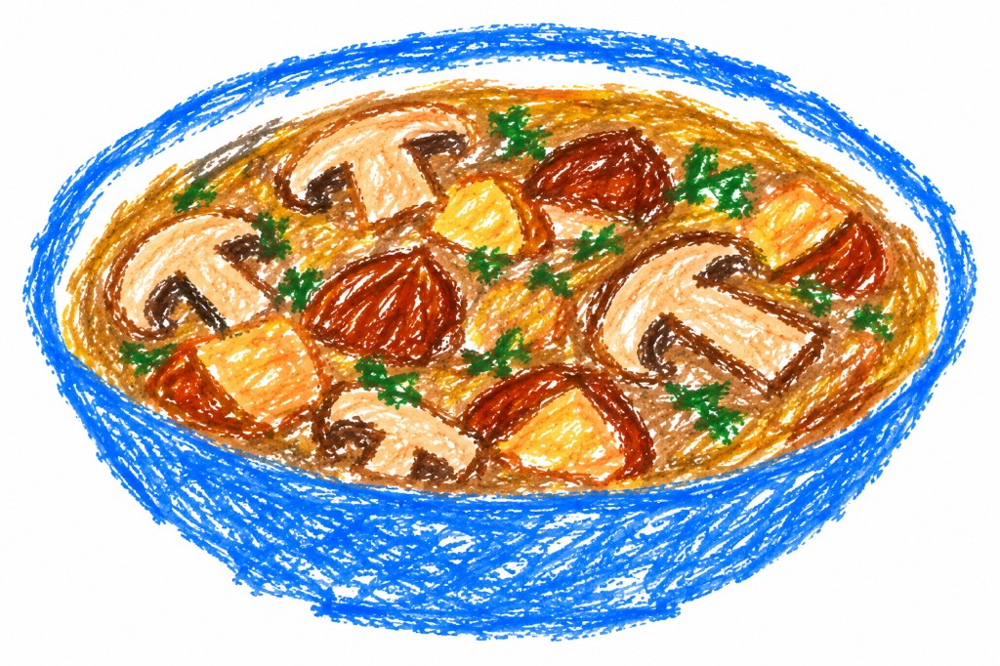

Zuppa di funghi e castagne
Ricetta d'autunno, per 4 o 6 persone.
Ingredienti
- 1 kg di funghi galletti
- 500 g di castagne
- 1 forma di pane casareccio tonda dalla crosta spessa
- 1 scalogno
- 2 fettine tagliate spesse di pancetta tesa affumicata
- brodo vegetale
- olio q.b.
- sale q.b.
- pepe q.b.
Preparazione
- In una pentola lessa in acqua le castagne.
- In un pentolino prepara il brodo vegetale.
- In una padella larga e profonda o in una pentola, fai scaldare l'olio inserendo gradatamente lo scalogno e facendolo appassire, la pancetta tagliata a dadini, le patate tagliate a dadini, i funghi galletti e le castagne intere precedentemente lessate e pelate della loro pellicola.
- Cuoci il tutto a fuoco lento per almeno 20 minuti aggiungendo il brodo vegetale mantenuto caldo e precedentemente preparato.
- Lascia riposare il tutto per alcuni minuti verificando e aggiustando di sale e pepe al bisogno.
- Nel frattempo taglia la superficie della pagnotta di pane e crea un coperchio, vuotala un po' della mollica di pane e inserisci la zuppa.
- Servi il tutto ben fumante.